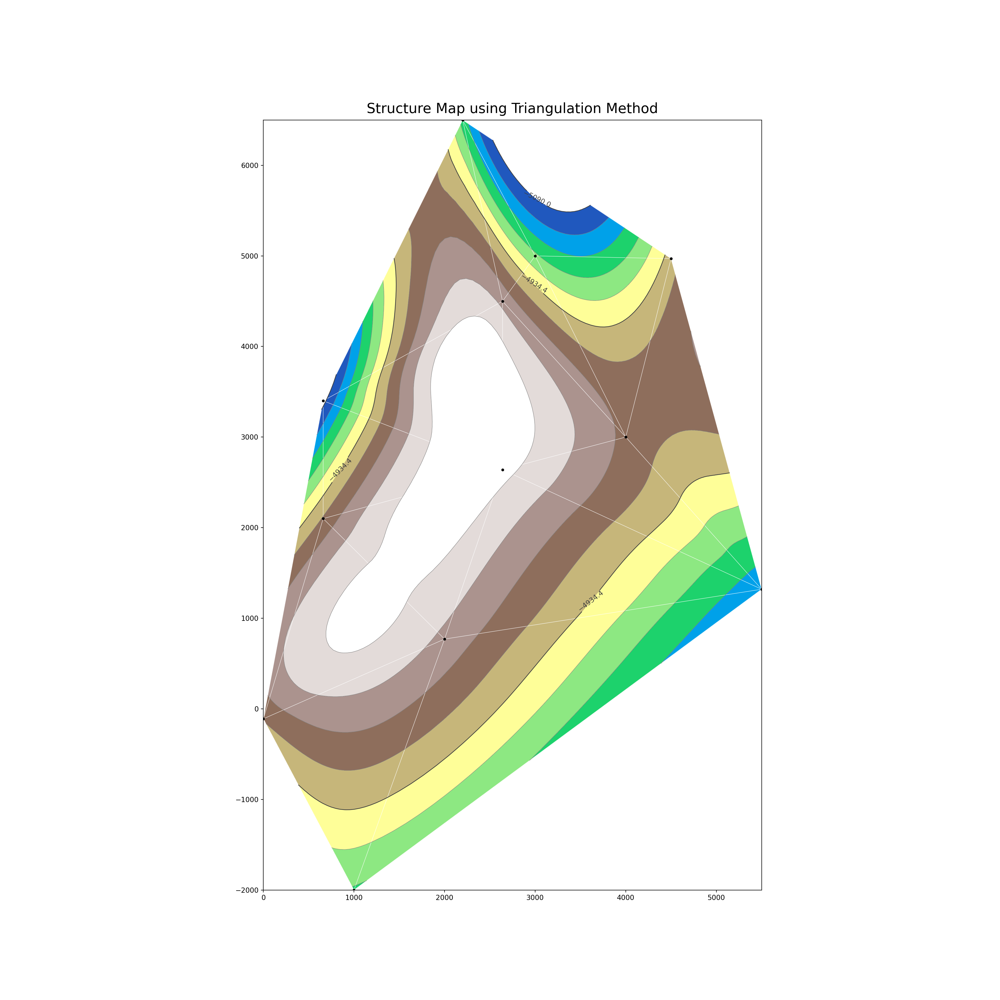

13 Volumetrics
13.1 Calculating the Gas inplace by volumetric methods
The standard cubic feet gas inplace, G is given by:
\[\begin{equation} G = \frac{43,560 V_{b} \phi (1-S_{w})}{B_{g}} \end{equation}\]
Contour Methods using trangulation mmethods
# Tricontour (triangulation) method"
import matplotlib.tri as tri
import matplotlib.pyplot as plt
import matplotlib.cm as cm
import numpy as np
import pandas as pd
import math
from scipy.interpolate import griddata
# data
welldat = pd.read_csv('data/data_volumetrics.csv')
x, y, z = welldat.x, welldat.y, welldat.z
triang = tri.Triangulation(x, y)
#-----------------------------------------------------------------------------
# Refine data
#-----------------------------------------------------------------------------
refiner = tri.UniformTriRefiner(triang)
tri_refi, z_test_refi = refiner.refine_field(z, subdiv=5)
#-----------------------------------------------------------------------------
# Plot the triangulation and the high-res iso-contours
#-----------------------------------------------------------------------------
plt.figure(figsize=(20, 20))
<Figure size 2000x2000 with 0 Axes>
plt.gca().set_aspect('equal')
plt.triplot(triang, lw=0.5, color='white')
[<matplotlib.lines.Line2D object at 0x0000000064A60A90>, <matplotlib.lines.Line2D object at 0x0000000064A60190>]
levels = np.linspace(min(z)+10, max(z)-10, 10) ##contour range, divided by 10 levels
cmap = cm.get_cmap(name='terrain', lut=None)
fig = plt.tricontourf(tri_refi, z_test_refi, levels=levels, cmap=cmap)
fig = plt.tricontour(tri_refi, z_test_refi, levels=levels,
colors=['0.25', '0.5', '0.5', '0.5', '0.5'],
linewidths=[1.0, 0.5, 0.5, 0.5, 0.5])
plt.plot(x, y, 'ko', ms=3) # plot the well points
[<matplotlib.lines.Line2D object at 0x0000000064894850>]
plt.clabel(fig, fig.levels[::5], inline=1, fontsize=10) # give labels for contours, fig.levels[::x] controls the frequency of labels
# lesser ::x, more populated by labels
<a list of 4 text.Text objects>
plt.title("Structure Map using Triangulation Method", pad=10, size=20)
Text(0.5, 1.0, 'Structure Map using Triangulation Method')
plt.show()